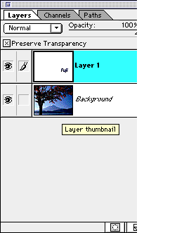

in Adobe Photoshop.
The picture below is what we're aiming for when we're done with this exercise. Notice how Red surrounds the text and fades out. It is a kind of shadow. This common technique can create remarkable text effects that can really help the look of your project. If you would like to follow along, go ahead and open Adobe Photoshop and open the image: FUJI.GIF to practice along. Before doing anything with FUJI.GIF, please convert it to RGB under the Image menu's Mode submenu. This can now be done with a mere menu item in Photoshop 5 -- still this may have some useful things. We call this, also, outer glow.
You may, of course, use any font or color you would like, so it may look a little different than I'm doing here.

Step 1:
Open the picture you will use. In this case, I have selected a photo of Mt. Fuji by a man in Japan who each week on his website posts a new photo of Japan's most famous mountain. Not surprisingly, I visit every week.

Step 2:
Select the type tool. That's the one shaped like a T. In this image, the eyedropper tool is selected. The T -- type tool -- is 2 boxes above it.

Step 3:
After selecting the type tool by clicking on it, simply put your pointer over the spot in the photo where you want the text to appear. The Type Tool dialog box will appear, as below. Here is an example of something you might write. You can change all of the font attributes. In most cases, you will want to make sure the Anti-Aliased button is selected. On our example image, I've clicked in the upper right near the tree. I typed in Japan.
Step 4:
Now comes the fun part. Look at your layers pallette. Under your window menu, "Show Layers." If the menu says Hide Layers, that means that the window is already open, so do nothing. The window will only have two layers. The background and one that says Layer 1 that has the text written on it. With your cursor, select within the layers pallette, Layer 1. You may change the name of the layer by clicking once on the words "Layer 1". Call it Text Layer" if you change the name.

Step 5:
Click on new layer button in your layers pallette (or new layer under the layer menu) to create a new layer. The new layer button is the one just being cut from view in our image above. It is on the bottom, second from left. Call this layer "Shadow Layer" or "Layer 2".
Step 6:
Click and hold on the Layer 2 -- Shadow Layer -- and drag it so it appears beneath Layer 1, but above the background layer. This will make the shadow appear behind the text in your finished document.
Step 7:
Under the select menu, pick Load Selection, This picks everything on that layer -- in this case, it is text- your words. You may also use the magic wand tool -- the second one down in the tool box on the right side. This will select every pixel of the same color that touches the spot you clicked. Then, under the Select Menu, you can do similar. This will pick everything of that same color.
This is how it should look. Note how the text is surrounded by a dotted line.
Step 8:
Now, select the Shadow Layer -- Layer 2. You will notice no difference in how the screen looks. You're applying the selected shape to your new Layer 2, which, as yet, has nothing on it. Under your Select menu go to Modify. Another subdirectory will appear. That directory will say Expand. Follow this dialog box that appears and type in 10 pixels:
When you hit return or click in the OK box, your screen should look something like this:
A brief aside:
If you're unsatisfied with the colors of your letters, you may change them using Adobe Photoshop's eyedropper tool. Simply click on a spot of your background with the eyedropper. The second tool from the bottom on the right of the tool box is the eyedropper -- it's the one selected for our illustration of step 2 in this lesson. When you click on that tool over your picture, the pixel's color will become your foreground color -- what will automatically fill your text. If you want another color, simply pick it.
Step 9:
The next step will have you filling in the selection on Layer 2 with a new color you may have selected. I picked a color using the eyedropper from the leaves. I picked a few times until I got the exact hue I wanted. To fill the selection, go to the Edit Menu and select fill. Pick the color -- foreground color in this case -- and 100 percent opacity. Click on OK and the image should now look something like this:
Step 10:
In the select menu select none. Then, call this step 10a, in the layers pallette select Layer 1 -- The Text Layer -- again. By now, your layers pallette should look something like this. In this example, the Shadow Layer has been selected.
Step 11:
Load selection a second time. Again, you're picking just the text on that Layer. Then, select Layer Two, the Shadow Layer. The lines will run around the inside text, as before.
It will look something like this:
Step 12:
Again expand this selected area under the select menu's submenu modify. This time, expand by about half of what you did before -- 5 pixels. It should look something like this.
Step 13:
Under the select menu, go to feather. This dialog will appear:
Make the feather radius about 4 pixels or so. You can vary it according to your taste. Click OK.
Step 14:
Select inverse underneath the select menu.
Step 15:
Hit the delete key. You should have a finished product that looks something like this. (The Layers Pallette is overlaying the window and is not part of the image, of course.)
Another example appears at the top of this document. Good luck and have fun.